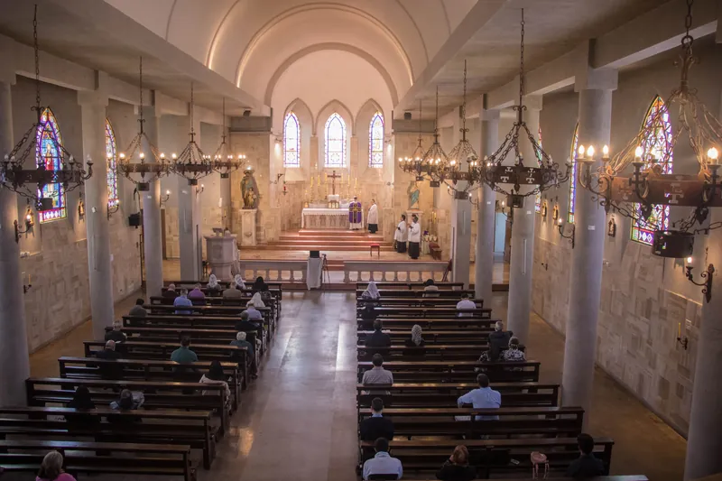

Queridos fieles:
Con motivo de la celebración del 40º aniversario de la fundación del Priorato Cristo Rey, quisiera facilitarles un texto en el que se resalta la gran importancia y la influencia que tienen nuestros Prioratos como fuente de la vida cristiana. Que este texto les sirva para agradecer a la Divina Providencia por tantas gracias que ustedes reciben gracias a sus Prioratos y continuar con fervor en su vida cristiana.
1º Clarividencia profética de Monseñor Lefebvre en considerar como parroquias nuestros prioratos
«Los prioratos de la Fraternidad San Pío X son vuestras parroquias». Así hablaba a los fieles el arzobispo Marcel Lefebvre en la década de 1980. Esta declaración podía parecer un poco inusual en este momento. Los fieles más afortunados frecuentaban estos famosos prioratos desde hacía menos de cinco o seis años.
Pero, incluso para los pioneros que podían acceder a uno de los escasos prioratos entonces existentes, la parroquia seguía estando cerca y formaba parte de la vida, esa parroquia selecta en la que un sacerdote había guardado la sotana, el catecismo y, sobre todo, la Misa tradicional. Ir a un priorato sólo podía ser un evento ocasional, para un retiro, una ceremonia, una confesión.
¿Quién habría dicho nunca: «los conventos – benedictinos, dominicos, franciscanos, jesuitas – son vuestras parroquias»?
Pero, en realidad, esta frase de monseñor Lefebvre fue profundamente profética, por una sencilla razón; y es que, en la mentalidad de la mayoría de los que resistían a la subversión religiosa, había una convicción a menudo subconsciente, pero seria: «Esta crisis es pasajera, no tardará en resolverse, y las cosas acabarán por arreglarse. Se elegirá a un buen Papa, y las parroquias volverán a recuperar la misa tradicional»
Con extraordinaria lucidez y con su visión llena de sabiduría, el «obispo de hierro» había visto la realidad de la crisis que entonces empezaba a sacudir a la Iglesia. Entendió que esta crisis sería larga, difícil y agotadora, y muy remota la esperanza de encontrar parroquias «normales». Por eso declaró también a los fieles – en resumen –:
«Instálense, construyan una red de vida cristiana a través de capillas, escuelas, casas de retiro, etc., que los cobije mientras dure esta crisis»
2º Carácter providencial de los prioratos en la Fraternidad Sacerdotal San Pío X
En los prioratos es donde los sacerdotes pueden rezar, estudiar, descansar, fortalecerse y prepararse para poder atender las capillas, escuelas y demás lugares donde se santifican los fieles católicos que resisten con valentía contra la ola de errores y pecados que azotan al mundo y a la Iglesia.
Monseñor Lefebvre habló con mucha insistencia de los prioratos en una conferencia para sacerdotes en mayo de 1988, afirmando que el priorato es más fundamental que las demás obras, por muy capitales que sean – como las escuelas o las casas de retiro –.
«El priorato – decía – es la solución para preservar la gracia del sacerdocio, para preservar el fervor del sacerdote. Creo poder decir con verdad que, si los prioratos desaparecieran, sería el fin de la Fraternidad. La Fraternidad se basa esencialmente en los prioratos. De ahí la importancia capital, a mi juicio, de la constitución de los prioratos».
En estos prioratos, que son –material y espiritualmente– baluartes, fortalezas, ciudadelas, residen dos o tres sacerdotes, uno o dos hermanos, y a veces también algunas religiosas. Este pequeño grupo, aparentemente in- significante, apoyándose en la verdadera doctrina católica, en la gracia de Cristo y en el sacrificio de la Misa, se encarga de trabajar por la santificación de cientos de fieles diseminados alrededor del priorato, para reconstruir por medio de ellos y en ellos una verdadera cristiandad.
Por su parte, estos fieles verdaderamente católicos levantan alrededor del priorato como un muro de oración, para que los santos ángeles protejan a sus sacerdotes y a sus religiosos de cualquier defección, error o desaliento. Estos fieles también aportan al priorato, en la medida de lo necesario, los medios materiales para que la obra del priorato –la vida de los sacerdotes, el sostenimiento de las capillas, escuelas y diversas obras– perdure con seguridad.
Los sacerdotes, partiendo del priorato, van a los fieles mediante la predicación de la fe, la celebración de la Misa y de la liturgia, y la administración de los Sacramentos.
A su vez los fieles deben agruparse alrededor de sus prioratos, estrecharse en torno a ellos, en un sentido moral y espiritual, por supuesto, pero también en un sentido material, si ello es posible y en la medida en que convenga: establecer la propia vivienda cerca del priorato permite beneficiarse del apostolado del sacerdote con más facilidad.
3º Necesidad, tanto para fieles como para sacerdotes, de apoyarse en los prioratos.
Pero, aunque no podamos residir cerca de un priorato, en las circunstancias tan difíciles que estamos atravesando, debemos tener un vínculo profundo y orgánico con nuestro priorato. Lo tenemos a través de la capilla que frecuentamos, por supuesto, en la que el sacerdote que ha venido del priorato nos dispensa la doctrina y la gracia; pero conviene ir más allá, y acostumbrarse a frecuentar el propio priorato, para recargarnos allí espiritualmente y recibir los consejos oportunos, para que nuestros hijos se formen en el conocimiento y el amor de Dios, y para que sepamos que tenemos un «puerto de amarre espiritual», un lugar que nos ayuda a seguir siendo católicos, y a no claudicar en nuestra fidelidad; un lugar, en definitiva, que sea para nosotros un bastión de cristiandad.
En particular, el priorato es para los sacerdotes, que en él llevan una vida religiosa necesaria para su equilibrio –y por lo tanto, necesaria también para el equilibrio de los fieles–, un lugar de estudio, de profundización de la doctrina cristiana y, en cuanto sea necesario, de la verdad natural –la sana filosofía según los principios de Santo Tomás, etc.–; pues la Revelación divina abarca, aclara y protege las verdades que la razón humana puede conocer. Sin la fe, la razón humana, herida por el pecado original, está expuesta a desviarse muy rápidamente, como podemos comprobarlo fácilmente en nuestra sociedad apóstata.
En la vida de un sacerdote, este estudio no es un punto marginal, un extra o un accesorio; al contrario, pertenece a su vocación, que es la de enseñar la verdad, y la verdad más elevada, la que concierne a Dios. «Los labios del sacerdote han de guardar la ciencia, y de su boca se ha de buscar la ley de Dios, porque él es el enviado del Señor de los ejércitos» (Mal. 2 7). Justamente, para poder enseñar esta ciencia a los fieles confiados a su cuidado, el sacerdote ha de esforzarse cada día en conocer mejor la doctrina divina.
Pero los fieles tienen tanta necesidad de la verdad como los sacerdotes. Por lo tanto, también es necesario y oportuno que esta verdad llegue a los fieles por medio de los sacerdotes, a través de sermones, conferencias, boletines, libros, e incluso –cuando es honestamente posible– a través de transmisiones por radio o internet; y también a través de encuentros personales. También en esto debe buscarse la «proximidad» con el priorato, para que cada fiel pueda, cuando le sea necesario, recurrir a las luces de la ciencia sacerdotal.
Conclusión.
Queridos fieles, agrúpense en torno a sus prioratos, frecuéntenlos regularmente, aférrense a ellos como a la niña de sus ojos. El combate va a perdurar por mucho tiempo, no va a resultarles fácil, y cada día van a tener necesidad de estos bastiones espirituales. Sean conscientes de esto: que, durante las próximas décadas, «los prioratos –y sólo ellos– serán sus parroquias».
+Padre Carlos Caliri, Prior.